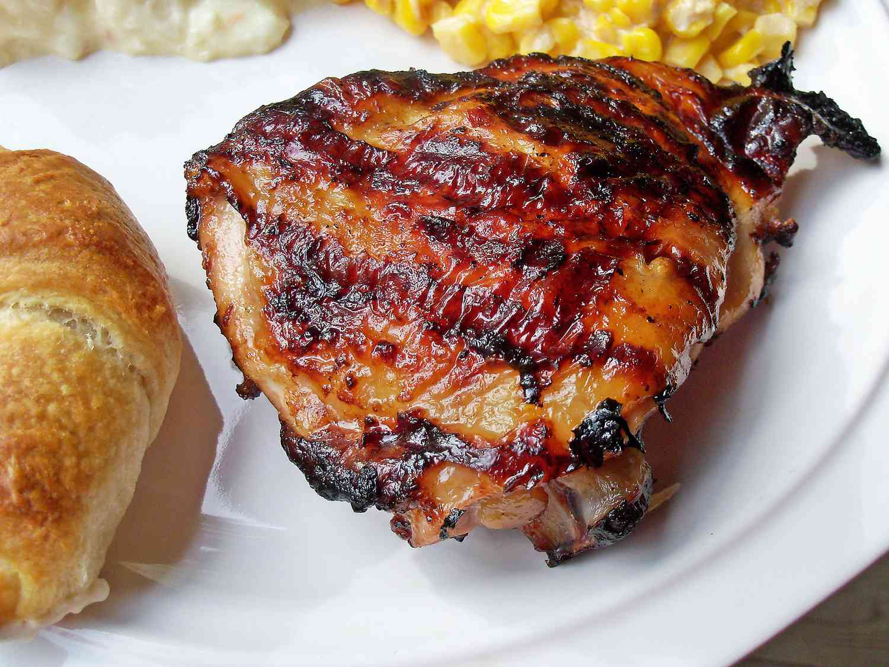

Italian Chicken Marinade

This Italian dressing chicken marinade is a super simple but delicious way to add flavor before grilling.
The preparation time is approximately 15 minutes, cook time is approximately 15 minutes, an additional time of 4 hours giving us a total cook time of 4 hours and 30 minutes. This recipe creates about 4 servings.
Ingredients
- 1 (16 ounce) bottle Italian-style salad dressing
- 1 teaspoon garlic powder
- 1 teaspoon salt
- 4 skinless, boneless, chicken breast halves
Directions
- Whisk salad dressing, garlic powder, and salt together in a shallow baking dish; add chicken breast and turn to coat. Cover the dish with plastic wrap and marinate in the refrigerator, 4 hours to overnight.
- Preheat an outdoor grilll for high heat and lightly oil the grate.
- Remove chicken from marinade and shake off excess; discard remaining marinade.
- Cook chicken on the preheated grill until no longer pink in the center and the juices run clear, about 7 to 8 minutes on each side. An instant-read thermometer inserted into the center should read at least 165 degrees F (74 degrees C).